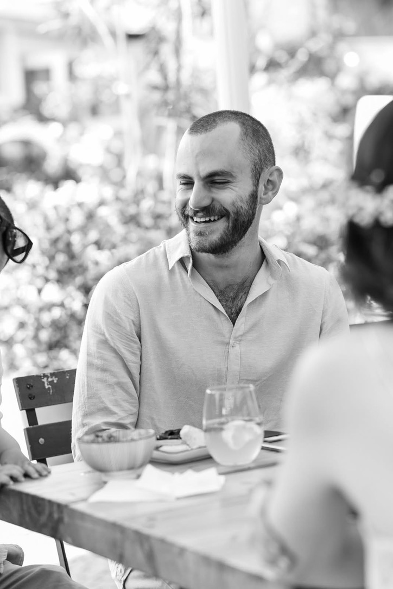

Digital designer based in Tel Aviv, currently studying Visual Communication at Shenkar. I combine distinctive visual styles with clear, functional design, working across visual communication, interactive experiences, and data visualization. Passionate about reading, drumming, and Muay Thai.
Design and development of an interactive data visualization on political protest and violence in Israel, in collaboration with The Seventh Eye, an investigative magazine.
both-sides.the7eye.org.ilDesign and development of the marketing website for NEIGHPalm, an AI-powered security and compliance platform.
neighpalm.comWeb Design & Development
AI-Assisted Development
Data Visualization
Adobe Creative Suite, Figma